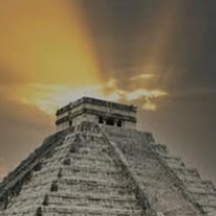
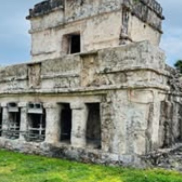
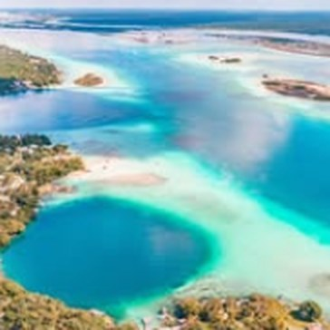
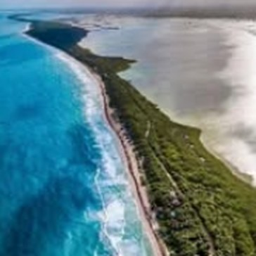
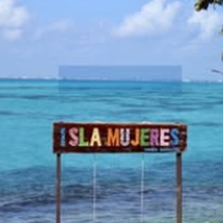

El Cielo, Cozumel
Un coin de paradis aux eaux cristallines : snorkeling parmi les étoiles de mer, les coraux et les tortues.
Réserver →Playa del Carmen · Riviera Maya
Excursions soigneusement sélectionnées et locations de vacances, pour découvrir le Yucatán en toute sérénité.
Chaque excursion s'adapte à votre rythme et à vos envies.
Un message WhatsApp suffit, nous vous répondons rapidement.
Des recommandations sincères de quelqu'un qui vit ici.
Collection
Au départ de Playa del Carmen. Tarifs et disponibilités sur demande.
Un coin de paradis aux eaux cristallines : snorkeling parmi les étoiles de mer, les coraux et les tortues.
Réserver →
Découvrez la cité maya inscrite parmi les sept nouvelles merveilles du monde et sa célèbre pyramide de Kukulcán.
Réserver →
Deux sites mayas incontournables : Tulum face à la mer des Caraïbes et Cobá au cœur de la jungle.
Réserver →
La lagune aux sept couleurs, des eaux turquoise à perte de vue pour une journée inoubliable.
Réserver →
Une réserve naturelle préservée, classée au patrimoine mondial de l'UNESCO, entre lagunes, mangroves et plages sauvages.
Réserver →
Navigation en catamaran, baignade et snorkeling dans les eaux turquoise d'Isla Mujeres.
Réserver →Séjourner
Appartements et logements sélectionnés à Playa del Carmen, idéalement situés pour profiter de la plage, de la Quinta Avenida et de nos excursions.
À propos
Vibe Riviera Maya est née d'un amour profond pour cette région. Notre mission : vous faire vivre les plus beaux endroits du Yucatán, avec le confort et l'attention que vous méritez.
Réservation
Remplissez le formulaire : votre demande s'ouvrira directement dans WhatsApp.